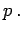
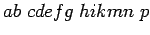
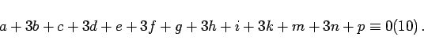

Inhalt Index DeskTop Bronstein

 Algebra und Diskrete Mathematik Elementare Zahlentheorie Codierungen Prüfzeichenverfahren
Algebra und Diskrete Mathematik Elementare Zahlentheorie Codierungen Prüfzeichenverfahren


EAN ist eine Abkürzung für ,,Europäische Artikelnummer ``, die man auf sehr vielen Artikeln in Form eines Strichcodes bzw. als 13- oder 8-stellige Ziffernfolge findet. Mit Hilfe von Scannern kann der Strichcode an Computerkassen eingelesen werden.
Bei der 13-stelligen Nummer geben die ersten beiden Ziffern das Herstellungsland an, z.B. 40, 41, 42, 43 oder 44 für Deutschland. Die nächsten 5 Ziffern stehen für den Hersteller, und eine weitere Gruppe von 5 Ziffern für das entsprechende Produkt. Die letzte Ziffer ist die Prüfziffer 
Man erhält die Prüfziffer, wenn man die ersten 12 Ziffern abwechselnd von links beginnend mit 1 bzw. 3 multipliziert und die Summe dieser Produkte durch Addition der Prüfziffer p zur nächsten durch 10 teilbaren Zahl ergänzt. Somit gilt für die Artikelnummer  mit der Prüfziffer p:
|  | (5.288) |
Durch dieses Prüfziffernverfahren werden an der EAN Fehler durch Verwechslung einer Ziffer immer aufgedeckt und Fehler durch Vertauschung zweier benachbarter Ziffern in den meisten Fällen erkannt. Oft nicht aufgedeckt werden Drehfehler durch Vertauschen nicht benachbarter Ziffern und Verwechslungen zweier Ziffern.